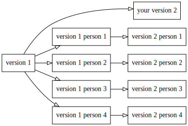
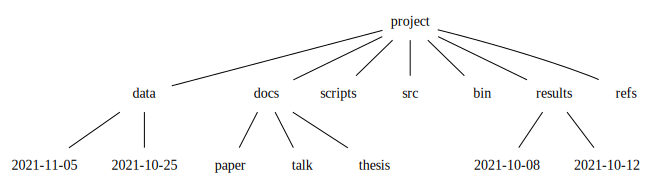

Best Practices
A talk for Barcelona Supercomputing Center’s Ph.D. students
Andrés Aravena, PhD
November 5, 2021
Welcome to Ph.D. student’s life
Congratulations, by the way
Doing a Ph.D. is an amazing experience
But it can also be stressful
We want to present some ideas on how to survive (and succeed) your Ph.D.
Some of them are personal opinions
(informed by shared experiences)
Some of them are endorsed by research
I am Andres Aravena
- Assistant Professor at Molecular Biology and Genomics Department, Istanbul University
- Mathematical Engineer, U. of Chile
- PhD Informatics, INRIA–U Rennes 1, France
- PhD Mathematical Modeling, U. of Chile
- Research in machine learning for metagenomics, and in gene expression analysis for systems biology
Focus on Philosophy, not Tools
Tools will change in time. There will be new tools
You probably use tools that did not exist 10 years ago
And they often are a matter of personal taste
So we will focus on the philosophy of the tools
(i.e. the part that will not change)
A Ph.D. goal is to produce and communicate new knowledge
(we call it “Doing Science”)
The key word here is communicate
What is the value of a result that is not made public?
We communicate with our collaborators
Most of research is done in teams
Good practices help teamwork, by:
- Keep track of what was (or was not) done
- Coordinate next steps
- Avoid work duplication
…but I work alone…
Even if we work alone, we are still communicating
- with your supervisor/advisor
- with the referees of your paper
- with other scientists that read (and cite) you
- including the next Ph.D. student in your lab
- with the general public
- with our future self
Each one of these interactions can improve following a good practice
Communicate with: your supervisor
Research results are not enough
You must convince your boss (and the jury) that you deserve to be called “Doctor”
Make your work easy to understand
Make clear what is your original contribution
…with the referees of your paper
Give them all they need to replicate and validate your work
Referees are busy people and are not paid
Being clear and transparent helps them to decide fast
You will get published faster, or at least get good feedback
…with other scientists in your field
that will read your paper
(and hopefully cite your work)
The game does not end when you publish
50% of papers are read only by the referee
Make your work easy to understand and replicate
I forgot where I read it
with the general public
Eventually, your work will have an impact outside academia
(the end goal is to make a better world, no?)
We need to be aware of the ethical implications
- Licensing
- Privacy
- Truth
This is reflected in the Reproducibility Crisis
with our future self
Nothing is more frustrating that reading your old work
“The past is a foreign country”
Undocumented code/protocols are hard to understand…
and you can only blame yourself
We need good practices, because
our mind fools us
We think we will never forget, but we do
“I remember it now, therefore I will remember it forever”
When we see something or learn something, this fact is present in our short-term memory and we feel like we will always remember it
Solution: Use a journal (or lab notebook, or blog)
We think our memories correspond to facts, but often they do not
“Things were exactly as I remember”
Research shows that our memory is not at all a “recorder”
We misremember a lot
Solution: Use a journal
We are bad at estimating projects’ complexity
We think that we can finish a project in less time that it will really take
Solution: Write in your journal how much time you worked every day.
Reflect on how did you use your time
We think that everybody knows what we know, so they do not need explanations
“I understand it, so everybody understands it”
This is the curse of knowledge
It is the main reason why our text is hard to read
Solution: still trying to figure out. Practice.
We think that everything we do is easy
“I’m not really that good, and one day they will realize I don’t know anything”
We learn a little every day, so it never feels hard
But we accumulated learning in a large period,
and it is hard to see how much we have learned
This leads to Impostor Syndrome
Solution: Look at your journal and reflect on how much have you learned in the last year
We don’t know that we don’t know
“Incompetent, and unaware of it”
This is the Dunning-Kruger effect
It is hard to improve if we don’t know we are bad
Be open to criticism of your work
You are not your work
First idea:
Structured Documents
Structured documents
You probably know that using a good data structure can dramatically improve an algorithm
And you use structured programs
The same applies to structuring our documents
Maybe you have used LaTeX, or Markdown
Maybe you know HTML
Separation of concerns
The key idea is to describe what things are, not how they look
Describe the role of text, not the “looks”
Separate style from structure
This part is based on the ideas discussed in “LaTeX: A Document Preparation System” by Leslie Lamport (1986).
It is like a house
Structure makes the house solid and comfortable
If you only do decoration, the house looks nice but it is not solid
Structure of the walls come first
Painting the walls in a nice color is secondary
Structural elements
- Sections, subsections, paragraphs
- Figures and Tables
- Lists
- References
- Equations
- Metadata
- Title
- Authors
- Affiliations
- Dates: submission, acceptance
- Media/format
Example: writing in LaTeX
A LaTeX document looks like this
\documentclass[a4paper]{article}
\title{On computable numbers, with an application to the Entscheidungsproblem}
\author{Alan M. Turing}
\date{28 May, 1936}
\begin{document}
\section{Introduction}
The ``computable'' numbers may be described as the real numbers whose
expression as a decimal are calculable by finite means.
\end{document}LaTeX files are text files. They will never be obsolete.
Changing the documentclass will change the document look
Advantages of LaTeX
Write first, compile later
Do not waste time playing with fonts
Good journals accept LaTeX submissions
(they also accept Microsoft Word format)
LaTeX files are text files
Independent of any provider
Use your favorite text editor (VScode?)
Version control friendly (GitHub?)
Can probably be read 20 years from now
We cannot say the same about Microsoft Word
According to the author of LaTeX
“[LaTeX] It’s easy to use—if you’re one of the 2% of the population who thinks logically and can read an instruction manual. The other 98 % of the population would find it very hard or impossible to use.
So maybe the main advantage is that it forces you to think logically and organize your ideas
“How (La)TeX changed the face of Mathematics”. An E-interview with Leslie Lamport. http://lamport.azurewebsites.net/pubs/lamport-latex-interview.pdf
3 mistakes that people should stop making
- Worrying too much about formatting and not enough about content.
- Worrying too much about formatting and not enough about content.
- Worrying too much about formatting and not enough about content.
“How (La)TeX changed the face of Mathematics”. An E-interview with Leslie Lamport. http://lamport.azurewebsites.net/pubs/lamport-latex-interview.pdf
Bonus: Slides for presentations
After writing your paper, you will probably present it
(or maybe before finishing it)
Using structured document makes it easy to recycle your material to presentation slides
In LaTeX you can do that using the beamer document class
Writing Math Expressions
LaTeX is favored by people who writes mathematical formulas
\[(a+b)^n=\sum_{k=0}^n \frac{n!}{k!(n-k)!} a^k b^{n-k}\]
You can use this syntax in Microsoft Word’s Equation Editor, and in web pages (using KaTeX or MathJax)
Learning how to write math is a good investment
Bibliographic References
There are hundreds of citation styles
Life is too short to sort references manually
LaTeX also provides a convenient way to handle references
References are stored in a separate text file, in BiBTeX format
Many tools can create BiBTeX files for you
- Zotero
- Mendeley
Collaborating with other people
Since LaTeX files are text files, it can be put under version control
In practice this means git, and maybe GitHub or GitLab
(or something in your server)
Several people can edit the same file at the same time
Git will do the right thing when merging
It does not need permanent Internet access
(i.e. you can write while traveling)
Real time collaboration
Overleaf is an online collaborative writing and publishing tool
Overleaf provides … an easy-to-use LaTeX editor with real-time collaboration and the compiled output produced automatically … as you type
You do not need to install anything in your computer
LaTeX disadvantages
- LaTeX is hard to learn
- This discourages many people
- Your collaborators may not use it
- You need to have the Reference Manual at hand
- It is oriented to producing printed material
- It produces PDF files or equivalents
- Not suitable for Web or eBook
- Writing tables is hard
Alternative: Markdown
It is a light markup system that can be easily converted into nice presentations
% On computable numbers, with an application to the Entscheidungsproblem
% Alan M. Turing
% 28 May, 1936
# Introduction
The "computable" numbers may be described as the real numbers whose
expression as a decimal are calculable by finite means.You probably have seen it in GitHub or Jupyter Notebooks
Same philosophy as LaTeX, but simpler
Markdown’s author says:
“The overriding design goal for Markdown’s formatting syntax is to make it as readable as possible.
“The idea is that a Markdown-formatted document should be publishable as-is, as plain text, without looking like it’s been marked up with tags or formatting instructions.”
John Gruber https://daringfireball.net/projects/markdown/
Using Markdown in practice
There are dozens (maybe hundreds) of Markdown editors and compilers
They offer many extensions
They are not always compatible
There is not yet an official standard
Recommendation: pandoc
Pandoc
If you need to convert files from one markup format into another, pandoc is your swiss-army knife
Pandoc can convert between many formats, including
- Markdown
- Microsoft Word/Powerpoint
- LaTeX
- Jupyter notebook
Practical pandoc
You can write your main text in Markdown, and convert it into LaTeX
Pandoc understands LaTeX math expression, and can convert them to HTML or Microsoft Word
You can mix Markdown and LaTeX, and pandoc will keep the LaTeX part
Pandoc advantages
Text files
It is easy to write tables in Markdown
It is easy to write lists
Can be used for slides
- Several web platforms (like this document)
- Microsoft Powerpoint
Handles BiBTeX references
Collaborating using Markdown
Markdown files are text files
Thus, git is the way to go
But if you want real time collaboration, try https://hackmd.io/
Alternative: Microsoft Word
Depending on your boundary conditions, you may choose to use a WYSIWYG word processor
You can still follow the same philosophy:
- Separate style from structure
- Focus on content
Style is not Structure
In word processors like Word®,
What You See Is What You Get
This is sometimes called WYSIWYG
It is easy to change fonts, sizes, colors and other visual attributes, without paying attention to structure
Structured Word documents

Now the document has structure

Collaborating
Sharing Word documents by email is a VERY BAD IDEA
It leads to chaos and confusion

Use an Online service
You can share your document via Dropbox or Google Drive
You can edit online using Microsoft Office 365 or Google Docs
Several people can work in the same document at the same time
Advantage: better spelling and grammar correction
But they require a permanent internet connection
My protocol
When I collaborate with non-markdown people, we use Google Docs
- We avoid using bold and italics
- Exception: scientific names of species (e.g. Homo sapiens)
- Instead we use Styles to define the structure
- I follow pandoc rules for citations
- Once finished, I export a Word file, and I convert it to Markdown using pandoc
- We share the code to produce every figure and table
My other protocol
If my collaborators know Markdown, I often use RMarkdown
- Developed for R language, but supports Python and other languages
- Syntax is Markdown + code
- The code for each table and figure is included in the document
- This is a big step towards replicability
- R replaces each code chunk with its result, and gives a plain Markdown file
- It uses pandoc to make Word/PDF/HTML
- We share using git
RMarkdown v/s Jupyter Notebooks
Both are similar in spirit
- Jupyter is like Excel. It is good to explore ideas
- It is code with a lot of comments
- RMarkdown is like Word. It is good to write a paper
- It is text with just enough code
Second idea
Folder structure
Prepare your files for the next user…
it may be you
Someone unfamiliar with your project should be able to look at your computer files and understand in detail what you did and why
William Stafford Noble. “A Quick Guide to Organizing Computational Biology Projects.” PLoS Computational Biology 5, no. 7 (2009): 1–5. https://doi.org/10.1371/journal.pcbi.1000424.
This “someone” could be:
- someone who read your published article and wants to try to reproduce your work,
- a collaborator who wants to understand the details of your experiments,
- a future student working in your lab who wants to extend your work after you have moved on to a new job,
- your research advisor, who may be interested in understanding your work or who may be evaluating your research skills.
Most commonly, however, that “someone” is you.
William Stafford Noble. “A Quick Guide to Organizing Computational Biology Projects.” PLoS Computational Biology 5, no. 7 (2009): 1–5. https://doi.org/10.1371/journal.pcbi.1000424.
Folder structure for every project

docsis where you write your paper/talk/thesisrefsis to store reference documents, like citationsdatais anything that you get from outside the computerresultsis what your code producesscriptsandsrcis where you write your codebinis for the compiled code
Data is Sacred
Producing data is expensive and time consuming
You don’t want to lose it
Mark it read only immediately
(and make backups)
Never modify them
Create cleaned up versions via a script
Filenames Rule 1: Be coherent
Decide when to use ., -, and _
Agree a standard with your collaborators
Check periodically that you are following your standard
(maybe with a script)
Rule 2: Write dates as YYYY-MM-DD
- When was 8/3/1965?
- Is today 5/11/2021 or 11/5/2021?
YYYY-MM-DD is an ISO standard
Sorting alphabetically, numerically, and chronologically are the same
There is no ambiguity of meaning
Collaborating
Sharing
- Git
- GitHub
- Bitbucket
- GitLab
- your own servers
- Online editors
- Google Docs
- HackMD.io
- Overleaf
Choosing roles and protocols
Define who are the authors early
Recommended reading:
“What Makes an Author.” Nature Methods 18, no. 9 (September 3, 2021): 983–983. https://doi.org/10.1038/s41592-021-01271-8.
Gewin, Virginia. “Steer Clear of Conflict.” Nature 594, no. 7863 (2021): 462–63.
More recommendations
Weinberger, Cody J., James A. Evans, and Stefano Allesina. “Ten Simple (Empirical) Rules for Writing Science.” PLoS Computational Biology 11, no. 4 (2015): 11–13.
Lortie, Christopher J. “Ten Simple Rules for Writing Statistical Book Reviews.” PLoS Computational Biology 15, no. 1 (2019): 1–5.
Frassl, Marieke A., David P. Hamilton, et al. “Ten Simple Rules for Collaboratively Writing a Multi-Authored Paper.” PLoS Computational Biology 14, no. 11 (2018): 6–13.
Erren, T, P Cullen, M Erren, and P Bourne. “Ten Simple Rules for Doing Your Best Research, According to Hamming.” PLoS Computational Biology 3, no. 10 (January 1, 2007): e213.
Final comments
Take care of yourself
- Drink a lot of water
- Especially when you drink alcohol
- Get enough sleep
- Don’t fry your brain, you only have one
- Try to make a routine. Minimize trivial decisions
- Save your energy for important things
- Go for a walk every day
Become a writer
Write every day. No exceptions.
- Start with 150 or 200 daily words
- Ideal is 750 daily words
Once you see yourself as “someone who writes every day”, it will be easy to write papers, projects, thesis, etc.
Get addicted to write, as you are addicted to social media
Try the Pomodoro technique
References
(please scroll to see more entries)